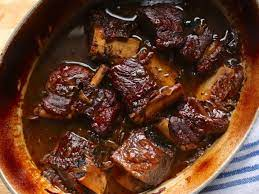

Braised Short Ribs

Description
I get more “WOW” comments from people enjoying these Braised Short Ribs
than almost any other recipe! The best part about them is how EASY they
are to make, cooked in just one pot with carrots and fresh herbs. This is
the perfect meal for Sunday dinner, a special occasion, or when having
company over and you don't want to slave away in the kitchen.
Ingredients
- Whole beef short ribs
- Salt and pepper
- Flour
- Pancetta
- Olive oil
- Onion
- Carrots
- Shallots
- Red or white wine
- Beef or chicken broth
- Thyme
- Rosemary
Steps
- Salt and pepper ribs, then dredge in flour. Set aside.
-
Cook pancetta in a large Dutch oven over medium heat until complete
crispy and all fat is rendered. Remove pancetta and set aside. Do not
discard grease.
-
Add olive oil to pan with the pancetta grease, and raise heat to high.
Brown ribs on all sides, about 45 seconds per side. Remove ribs and set
aside. Turn heat to medium.
-
Add onions, carrots, and shallots to pan and cook for 2 minutes. Pour in
wine and scrape bottom of pan to release all the flavorful bits of
glory. Bring to a boil and cook 2 minutes.
-
Add broth, 1 teaspoon kosher salt, and plenty of freshly ground black
pepper. Taste and add more salt if needed. Add ribs to the liquid; they
should be almost completely submerged. Add thyme and rosemary sprigs
(whole) to the liquid.
-
Put on the lid and place into the oven. Cook at 350˚F for 2 hours, then
reduce heat to 325˚F and cook for an additional 30 to 45 minutes. Ribs
should be fork-tender and falling off the bone. Remove the pan from the
oven and allow it to sit for at least 20 minutes, lid on, before
serving. At the last minute, skim fat off the top of the liquid. (You
can also refrigerate the mixture, then remove solid fat from the top.)
-
Serve 2 ribs on a bed of creamy goat cheese polenta, spooning a little
juice over the top.